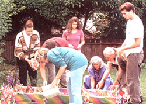
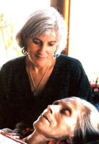
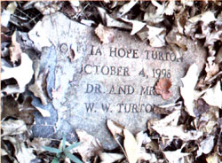
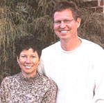

Greener Ways To The Great Beyond
April/May 2003
Here's how to ensure your final resting place is earth friendly and priced right.
By Nancy Smith
A typical, no-frills funeral and burial in the United States costs from $6,000 to $10,000, uses formaldehyde in embalming, nondegradable steel caskets and concrete vaults placed shoulder to shoulder in established cemeteries.
Burial in a green or natural cemetery, on the other hand, can cost half as touch, and embalming mortal caskets and concrete burial vault's are prohibited. Instead, biodegradable caskets, usually made of wood or cardboard, or burial shrouds of natural fibers are used. Green cemetery graves are placed randomly throughout a woodland or meadow, and marked only in natural ways, with the planting of a tree or shrub, or the placement of a flat indigenous stone, which may or may not be engraved. Burial locations are mapped with a GIS (geographic information system), so future generations can locate an ancestors final resting place.
There are more than 200 green cemetery its in Great Britain, and the idea is beginning to catch on here in North America. Lisa Carlson is executive, director of the Funeral Consumers Alliance in South Burlington, Vermont, and author of Caring for the Dead , which tackles the topic of funeral law state by state. She reports embalming, expensive caskets anti concrete vaults are: not required by law in any state. Bodies can be kept cool until burial rather than being embalmed and cemeteries require vaults only to prevent soil settling and facilitate grass mowing.
The leader in the emerging green-cemetery business in this country, Carlson says, are Dr. Billy and Kimberley Campbell of Memorial Ecosystems, founded in 1996 in Westminster South Carolina. Their idea is to Use green cemeteries to preserve open space. You can be buried at the Campbells first green cemetery, Ramsey Creek Preserve, in Westminster, and visitors can walk on trails through 32 acres of mixed Woodlands and open fields there.
In Florida, a green cemetery called Glendale Memorial Preserve is being established to save a 350-acre family farm from development. And groups in several other states, inducting Colorado, California, New York, Washington and Wisconsin, have efforts under way to established green cemeteries that center on land preservation. In Canada, the Memorial Society of British Columbia also has a formally funded green-burial initiative under way.
The first burial at Ramsey Creek Preserve occurred in the fall of 1998; to date, 17 more have taken place. Another 50 persons have purchased sites. A casket burial there costs about $2,500. Burial of cremated remains is only $500; scattering of cremated remains is $250. Stone grave markers and engraving are optional; the stones are $25; engraving ranges from $125 to $300. Caskets are not included. (For instructions on building your own casket, see Page 61.)
Dr. Campbell says people seem to want to be buried there because of the site's natural beauty, the lower cost and the land preservation effort. Bodies usually arrive for burial at Ramsey Creek Preserve via a local, independent funeral home, whose owner has agreed to hold them under refrigeration until delivery to the preserve. The nature of any graveside ceremony is determined by the families. "Whatever spiritual bent you bring to the preserve, our natural landscape is very healing," Kimberley Campbell says. "What we do is very simple, but there is something very, very special about the simplicity of it."
Sherrill Hughes buried her husband, Roland, at Ramsey Creek Preserve. She says she knows without a doubt that was what he would have wanted. His body was placed in a simple pine box-a preference he had expressed-and buried under a dogwood tree; her grave site is right next to his, and she says her children all want to be buried there, too. "Roland's funeral was so personal. In most funerals there's no emotion, but at Ramsey Creek, you can do what you want." She played his favorite songs Dolly Parton's "I Will Always Love You" and George Jones' "He Stopped Loving Her Today"-and placed the first spade full of dirt in his grave.
Following her lead; their children shoveled too, "and before we knew it, the boys-my two sons-in- and nephew - had nearly finished tilling in the grave."
Hughes, who lives in Atlanta, says she wouldn't describe herself or her husband as environmentalists. Rather. they always just tried to take care of what God had given them, "and that included the Earth." She plans to move to the Westminster area soon, where most of her family al ready lives, and she plans on building her own casket and helping out as a volunteer at the preserve.
Dr. Campbell says folks buried there so far fit a range of descriptions, and the majority are not environmentalists-which is exciting to him. Going through a green burial process helps people get beyond the "nature as wallpaper" mentality, he explains. The only medical doctor in Westminster, he has a longtime interest in the environment (in 1986, he helped found the South Carolina Forest Watch, a group that monitors the well-being of the state's forests) and he has been dealing with death since his medical school days; his wife thinks it's a reassuring combination to their patrons. She also says Atlanta's suburban sprawl is fast encroaching on their area, so they feel a sense of urgency.
Dr. Campbell says, "My idea is that we need to link land conservation with ritual and with people in a very fundamental way. When the economy is not quite what it should be, money is a problem (for groups dedicated to land preservation), but if Mamma and Grandmamma are buried some place, you might look at it differently."
Establishing the preserve seemed simple, but it proved a daunting task, according to Kimberley Campbell. In 1992, the state cemetery board was legislatively disbanded; as a consequence, determining which authorities to contact about the project proved a challenge.
To help build the site's status as a nature preserve, an inventory of plants has been taken, and Dr. Campbell says a "site appropriate" native plant-the smooth-leafed coneflower (Echinacea laevigata) - is being planted on some of the grave sites to take advantage of the disturbed soil. Tripartite violets and the crested coral root, uncommon native plants, also have been found.
A visitor's center, staffed by Kimberley's parents, sits near the entrance, and an old chapel has been moved onto the grounds to be restored for use by people of all faiths. Life histories of those buried at the site will be archived there.
The Campbells also have provided assistance to others interested in following their example. Dr. Campbell says he is willing to work with any entity with large land holdings that might want to set up a similar preserve-complete with ethical oversights in both financial and environmental areas. "We're building a socially responsible for-profit business," he says of Memorial Ecosystems.
Of the other green burial initiatives under way in the United States, the closest to being operational is the Glendale Memorial Nature Preserve near Glendale, Florida. It is owned by brothers John and Bill Wilkerson, and now can accept burials but not yet legally charge for them. John, the family's spokesperson, says that's because he and his brother still are negotiating with the state of Florida over a $5,000 nonrefundable cemetery application fee, plus a $50,000 trust fund required to ensure maintenance of the nature preserve but which duplicates a fund to be established under Memorial Ecosystems guidelines. Until an agreement is reached, in lieu of a formal burial fee, donations were being accepted; as of early 2003, no burials had taken place.
The Glendale preserve was established, John says, because he and his brother took their father seriously when he said, "Boys, this is a beautiful piece of property. It would be a shame to turn it into a mobile-home park." The entire 350-acre farm, where the elder Wilkerson grew peanuts, corn and soybeans, and his sons now grow chufa, a specialty wildlife seed crop, will be the preserve.
In addition to providing grave sites, the Wikersons make simple coffins from native woods, using an on-farm sawmill, and have gathered a selection of flat indigenous stones, which a local stonemason has agreed to engrave.
John says he and Bill handled their own parents' burials, including making the coffins-pine for Dad; poplar for Mom-and digging the graves. Their father died in 1996 and their mother, who wanted her funeral and burial to be a simple affair, "and never missed a chance to remind us of that," died in 2000. The couple is buried in a little church cemetery that lies adjacent to the farm, on land they donated earlier to the church. Digging those graves was "a very powerful thing to do," John says. "It really facilitated the grieving process."
Dr. Campbell, who is on the Glendale Preserve's board of directors but not involved financially in the project, has attended meetings between the Wilkersons and Florida state officials to help explain the memorial preserve idea. He says he thinks Florida's financial requirements are "oppressive" and notes an Ohio group also trying to establish a memorial preserve is dealing with a similar situation. Such fees are designed to help ensure perpetual care" lot grave site', in a new cemetery. .says Carlson, but in a green cemetery, traditional maintenance practices, like large-.5c-.ilu lawn mowing, do not occur.
The rules at both Ramsey Creek and Glendale Preserves are simple: No embalming no casket unless it is biodegradable, no vault and no stone that that can be pushed over. Kimberley Campbell says they advocate natural burial as the best choice and cremation as the second best because cremation uses energy and re leases toxins into the environment. Natural burial really isn't a new idea, she adds. "It's thousands of years old, and the reason is, its a very natural effective way to dispose of a person's remains. And wouldn't it be wonderful to visit a loved one's grave a site atom, a beautiful prune trail, in a towering England forest or other quiet place of natural beauty?
HOME FUNERALS
Your mother is dying. You want to care for her yourself, at home, when death finally arrives, rather than hiring a mortuary. She feels the same. Together, while there is still time, you decide to plan her service and burial. How do you begin?
Three books are especially helpful: Caring for the Dead: Your Final Act of Love, by Lisa Carlson; Guidebook for Creating Home Funerals by Jerri Lyons; and Dealing Creatively with Death, A Manual of Death Education and Simple Burial by Ernest Morgan.
Carlson, executive director of the nonprofit Funeral Consumers Alliance in South Burlington, Vermont, has become a national spokesperson for the "do-it-yourself" funeral movement in the last few years. She says such burials, especially on private land, appear to be on the rise. "There's no easy way to track it, but there seems to be an ongoing interest in family burial. It's being done quietly, but the number of inquiries on this topic at the Funeral Consumers Alliance is definitely increasing."
The trend is totally predictable, she adds. "The generation that demanded natural childbirth in the '60s and '70s, and recycling in the '90s is wanting green burials, including do-it-yourselfers, now."
Author Jerri Lyons is director of Final Passages, a 7-year-old not-for-profit organization in Sebastopol, California, and a death midwife. Her goal with Final Passages is "to reintroduce the concept of funerals in the home as a part of family life and as a way to deinstitutionalize death." Through this nonprofit project, she provides information and education, and through her own for-profit company, Home and Family Funerals, she offers her death midwife services. She knows of several other death midwives in California and one in Maryland: others may be working quietly on their own in other areas.
Lyons personally has helped more than 200 California families handle their own funerals, and she has counseled many more across the country via the telephone. She says she believes the widespread practice of having the deceased person's body whisked away at the time of death by funeral home personnel interrupts the normal grieving process and destroys the coherence families can achieve on their own. When the family handles is own funerals, members gain "better closure, a sense of empowerment and substantial economic savings."
Lyons' guidebook includes step-by-step instructions for such things as washing and dressing the body to "lie in honor," and handling transportation of the body home and/or to the place of disposition, which is either cremation or burial. The book also includes specific information on government paperwork required for home funerals in California.
Through Final Passages, Lyons presents workshops about funeral options and about becoming death guides or death midwives like herself.
Most of the families Lyons has helped used cremation for disposition of the body. She also has participated in one "earth friendly" or green burial, in the Sebastopol Memorial Lawn Cemetery, an older, privately owned facility. The body was not embalmed; the casket was pine and no vault was used; the dirt was simply mounded up on the grave, rather than being leveled as it is over a vault.
Lyons predicts green and home burials will increase if information about them becomes more widely available. "Most people in this country don't know they have the legal right to care for their own loved ones when they die," she says.
The organization's Web site includes interviews with people who have planned their own funerals and photographs of burials, along with resource information. Death midwife Jerri Lyons sits with Jasmine during her threeday wake, which was held in a friend's home overlooking the Pacific Ocean.
Carlson cautions persons who choose to handle death privately to "take great care to follow all state and local regulations. The requirements are not complex, but failure to meet them can lead to unpleasant situations and create a climate in which professionals become less willing to work with families."
In her book, she explains the precision needed in filling out a death certificate, required by every state, and she reports situations where special death certificates are required, including fetal deaths and those that require an autopsy. She notes that special circumstances, such as an extended time between death and disposition, may make embalming necessary, but refrigeration or dry ice can take the place of embalming in many instances. She also warns readers to "never move a body without a permit or medical permission."
Home burials require an examination of local zoning ordinances, says Carlson. "For those with land in rural or semi-rural areas, home burials usually are possible."
REMEMBER
Even if you use a conventional funeral home and cemetery, be aware that embalming, expensive caskets and concrete vaults generally are not required by law. Cemeteries may set such requirements, and waive them if they choose. So, if you want a simpler burial, ask around. You may find a funeral home and cemetery that suits your needs.
If you are thinking about handling a funeral yourself, you should know that most states clearly allow families to care for their own dead, according to Lisa Carlson, author of Caring for the Dead: Your Final Act of Love. Only six states may limit families who want to take charge of the process: Connecticut, Indiana, Louisiana, Michigan (thanks to an uncooperative health department despite a law that says otherwise), Nebraska and New York. For more details, read Caring for the Dead, or contact Carlson at www.funerals.org. If you don't hire a funeral director, here are some things you should know:
Death Certificates. A death certificate stating the cause of death and signed by a doctor must be filed, usually in the county or district where death occurs, where a body is found, or where a body is removed from a public conveyance or vehicle. This must usually be accomplished before other permits are granted or before final disposition.
Embalming. No state requires routine embalming of all bodies. Refrigeration or dry ice can substitute for embalming in most instances. Special circumstances such as extended time between death and disposition can necessitate embalming under state law. Interstate transportation by a common carrier also may require it.
Burial permits. In some states, when burial will be outside the county or town where death occurred, you will need an additional permit to inter from the local registrar in that area. In many states, the top of the coffin must be at least 3 feet below the soil surface. A burial location should be 150 feet or more from a water supply and outside the utility or power line easements.
Moving a body. Never move a body without having a permit or medical permission in hand!
Cremation. A special permit-to-cremate may be needed; these are available from the local coroner or medical examiner, and a modest fee is usually charged.
Join the Experts Online
Learn more about green burials and home funerals, and chat with guest experts Dr. Billy and Kimberley Campbell, Lisa Carlson, John Wilkerson, Mary Woodsen and Jerri Lyons on the Mother Earth News Web site at www.motherearthnews.com/forums/
EACH YEAR IN THE U.S. we bury:
827,060 gallons of embalming fluid, which includes formaldehyde 180,544,000 pounds of steel, in caskets 5,400,000 pounds of copper and bronze, in caskets 30 million board feet of hardwoods, including tropical woods, in caskets 3,272,000,000 pounds of reinforced concrete in vaults 28,000,000 pounds of steel in vaults
Statistics compiled by Mary Woodsen, vice president of the Pre-Posthumous Society of Ithaca, New York, and a science writer at Comell University.
For More Information
Funeral Consumers Alliance.
Lisa Carlson; 33 Patchen Road;
South Burlington, VT 05403;
(800) 765-0107
Final Passages. Jerri Lyons; PO.
Box 1721; Sebastopol, CA 95473;
(707) 824-0268
Memorial Ecosystems, Inc. and Ramsey Creek Preserve.
Dr. Billy and Kimberley Campbell;
113 Retreat St.;
Westminster, SC 29693;
(864) 6477798
Glendale Memorial Nature Preserve.
John and Bill Wilkerson;
297 Railroad Ave.; DeFuniak Springs,
FL 32433; (850) 859-2141; www.glendalenaturepreserve.org
The North American Woodland Burial Society.
An information exchange:
woodlandburial.html planet.com
The Memorial Society of British Columbia.
212-1847 W. Broadway;
Vancouver, British Columbia V6J 1Y6;
(604) 733-7705; www.memorialsocietybc.org
|
 COURTESY FINAL PASSAGES |
 Mildred, age 86, wanted a home funeral, just like her folks back in Iowa, so her children obliged. Mildred's decorated casket rode to the rematoryn the family's camper van. |
 MARY WOODSEN |
|
 Our guest experts Dr. Billy and Kimberley Campbell |
 |
|